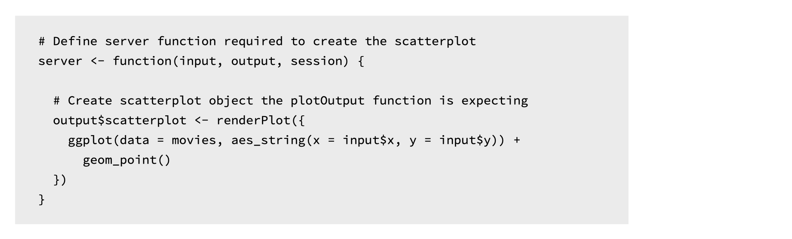
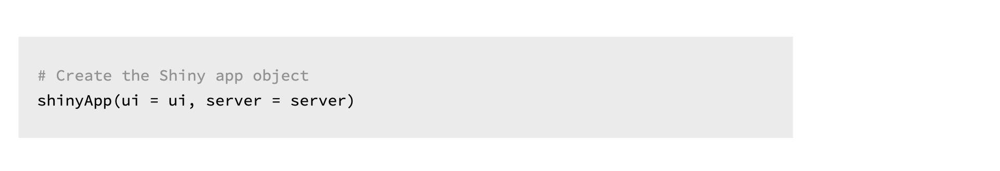
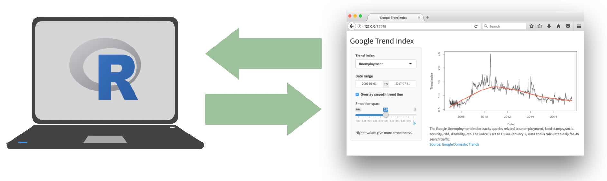

3 Server function
Now that you’ve had some practice with the UI, it’s time to move on to the server function.
Again, before we get into the details, let’s remind ourselves of the anatomy of a Shiny app. The basic task of the server function is to define the relationship between inputs and outputs.
3.0.1 Here again is the app that we are working with in this module
Earlier we saw how to build the UI of this app, and we also noted that each input was tagged with an inputId that can be used to refer to them in the server.
3.0.2 This is the server function code for this app
Once again there is a lot going on here to parse at once, so in the following sections we take a closer look at the function.

3.0.3 At the outermost layer

We define our server function which takes two arguments: an input and an output. Both of these are named lists.
The server function accesses inputs selected by the user to perform computations and specifies how outputs laid out in the UI should be updated.
The server function can take on one more argument, session, which is an environment that can be used to access information and functionality relating to the session. However this concept is beyond the scope of this tutorial, so for now we’ll stick to server functions that only have input and output arguments.
3.0.4 output
Our simple app had only one output – a plot. So our server function contains the logic necessary to build this plot.

The renderPlot() function specifies how the plot output should be updated. Let’s take a look at what is happening in the renderPlot() function first.
3.0.5 renderPlot()

This is good ol’ ggplot2 code! So even if you’re new to shiny, if you’ve previously used ggplot2 for plotting in R, this syntax should look familiar to you.
One aspect of the syntax that might be new, however, is how the x and y variables are defined. They come from the input list that is built in the UI.
3.0.6 Inputs
Here is the relevant UI and server code.

Input x and y come from the selectInput() widgets, and map to the x and y arguments of the plot aesthetics.
3.0.7 Rules of server functions
There are three rules of building server functions:
Always save objects to display to the named output list, i.e. something of the form
output$xx, wherexxis the plot you want to display.Always build objects to display with one of the
render*()functions, like we built our plot withrenderPlot().Use input values from the named input list, with
input$xx.
3.0.8 Output types
Just like various inputs, Shiny also provides a wide selection of output types each of which works with a render function.

For example, in our app we used the renderPlot() function to build our reactive plot (we’ll get to what I mean by reactive in a second) and laid out the plot with the plotOutput() function.

Shiny knows to match these two together as they use the same outputID, scatterplot.
In the following exercises you’ll get a chance to work with other render/output function pairs to add more elements to your app.
3.0.9 Practice: Matching inputs and outputs
Here is a simple Shiny app. Try entering some text and observe how the text is displayed back to you after a short pause.
#{r, context = "server", eval = TRUE} # output$user_text <- renderText({ input$custom_text }) #
The code for this app is given below, with a few pieces missing (indicated with ___). Each of the blanks are numbered, e.g. ([1], [2], etc.)
library(shiny)
ui <- fluidPage(
textInput(
inputId = "custom_text",
label = "_[1]_"
),
strong("Text is shown below:"),
_[2]_(outputId = "_[3]_")
)
server <- function(input, output, session){
output$user_text <- renderText({ input$_[4]_ })
}
shinyApp(ui = ui, server = server)#{r mc-2} #question("Which of the following is false?", # answer('`[1]` should be `"Input some text here:"`', # message = "Take a look at the app, what text is #shown to the user above the text input area?"), # answer('`[2]` should be `textOutput`', # message = "Check out the Shiny cheatsheet for pairs #of input and output functions"), # answer('`[3]` should be `"custom_text"`', correct = TRUE), # answer('`[4]` should be `"custom_text"`', # message = "What is the ID of the input that should #be rendered?"), # allow_retry = TRUE #) #
3.0.10 Reactivity
Let’s also briefly discuss reactivity.

It’s easy to build interactive applications with Shiny, but to get the most out of it, you’ll need to understand the reactive programming scheme used by Shiny.
In a nutshell Shiny automatically updates outputs, such as plots, when inputs that go into them change.
3.0.11 Putting all the pieces together
Before we wrap up this section, I should also mention the last component of each Shiny app, which is a call to the aptly named shinyApp() function, which puts the UI and the server pieces together to create a Shiny app object.

Time to put this all into practice!
3.0.12 Practice: Rules of server functions
Which of the following is not true about server functions?
#{r mc-3} #question("Which of the following is not true about server functions?", # answer("Server functions should include a call to #`runApp()`", # correct = TRUE, # message = "The `runApp()` function can be used in the Console to run a Shiny application, as an alternative to the Run App button in the RStudio IDE." # ), # answer("Objects to be displayed should be saved to #`output$`"), # answer("Reactive objects should be built with `render*()` functions"), # answer("Input values should be referred to with `input$`"), # allow_retry = TRUE, # random_answer_order = TRUE #) #
3.0.13 Practice: Fix it up
Below is the code for the Shiny app we built earlier, however currently the code is broken. Specifically there are errors in the definition of the server function as well as in the mainPanel of the UI.
3.0.13.1 Your turn
- Review the app and identify errors in the code.
- Hint: Refer back to the rules of server functions.
- Do the render functions match the output functions? If not, make the appropriate change and try running the app. Are there any remaining errors?
- Are the inputs referred to using the correct syntax? If not, make the appropriate change and try running the app. Are there any remaining errors?
- Are the outputs referred to using the correct names? If not, make the appropriate change and try running the app. Are there any remaining errors?
Navigate to the project called 1-3 Fix it up after clicking the button below
# Load packages ----------------------------------------------------------------
library(shiny)
library(ggplot2)
# Load data --------------------------------------------------------------------
load("movies.RData")
# Define UI --------------------------------------------------------------------
ui <- fluidPage(
sidebarLayout(
# Inputs: Select variables to plot
sidebarPanel(
# Select variable for y-axis
selectInput(
inputId = "y",
label = "Y-axis:",
choices = c(
"IMDB rating" = "imdb_rating",
"IMDB number of votes" = "imdb_num_votes",
"Critics score" = "critics_score",
"Audience score" = "audience_score",
"Runtime" = "runtime"
),
selected = "audience_score"
),
# Select variable for x-axis
selectInput(
inputId = "x",
label = "X-axis:",
choices = c(
"IMDB rating" = "imdb_rating",
"IMDB number of votes" = "imdb_num_votes",
"Critics score" = "critics_score",
"Audience score" = "audience_score",
"Runtime" = "runtime"
),
selected = "critics_score"
),
# Select variable for color
selectInput(
inputId = "z",
label = "Color by:",
choices = c(
"Title type" = "title_type",
"Genre" = "genre",
"MPAA rating" = "mpaa_rating",
"Critics rating" = "critics_rating",
"Audience rating" = "audience_rating"
),
selected = "mpaa_rating"
)
),
# Output: Show scatterplot
mainPanel(
plotOutput(outputId = "scatterPlot")
)
)
)
# Define server ----------------------------------------------------------------
server <- function(input, output, session) {
output$scatterplot <- renderTable({
ggplot(data = movies, aes_string(x = x, y = y, color = z)) +
geom_point()
})
}
# Create a Shiny app object ----------------------------------------------------
shinyApp(ui = ui, server = server)3.1 Recap
Let’s quickly recap what we have learned in this chapter.
3.1.1
Every Shiny app has a webpage that the user visits, and behind this webpage there is a computer that serves this webpage by running R.

3.1.2
When running your app locally, the computer serving your app is your computer.

3.1.3
When your app is deployed, the computer serving your app is a web server.

3.1.4
Each app is comprised of two components, a UI and a server.

The UI is ultimately built with HTML, CSS, and JavaScript. However, you as the Shiny developer do not need to know these languages. Shiny lets R users write user interfaces using a simple, familiar-looking API. However there are no limits to customization for advanced users who are familiar with these languages.
The server function contains the instructions to map user inputs to outputs.
I often think of the UI as containing syntax specific to Shiny, and the server as containing R code you might already be familiar with – with some Shiny functions added to achieve reactivity.
3.1.5 Tip: Change display
In this tutorial you will be developing your apps in RStudio Cloud projects, but once you’re done with the tutorial you might consider developing your apps in the RStudio IDE, which has some some handy-dandy functionality for running and viewing your apps.
RStudio will automatically recognize R scripts that contain ui and server components and that end with a call to the shinyApp() function and will make available the Run App button. You can choose to run your app in a new window, or in the viewer pane of your RStudio window.

3.1.6 Tip: Close an app
When you are done with an app, you can terminate the session by clicking the red stop button in your viewer pane.

3.1.7
That’s all for this module! In the next module we discuss inputs, outputs, and rendering functions in further detail.